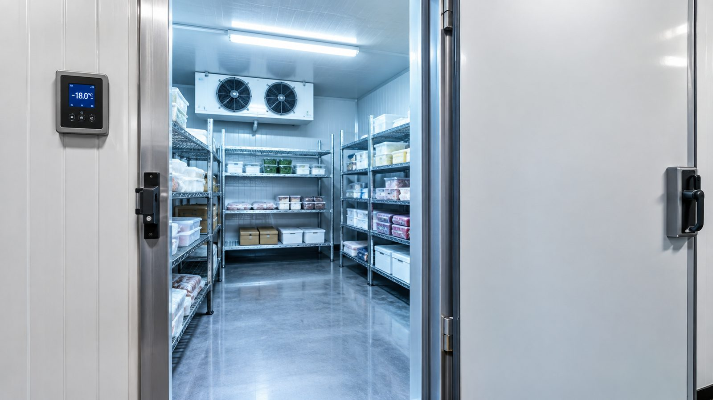

RESPUESTA EL MISMO DÍA
Tu cámara frigorífica no enfría en Cartagena. Vamos hoy.
Cámaras industriales y modulares, positivas y negativas. Desde el casco histórico hasta Cabezo Beaza y La Manga del Mar Menor, cuéntanos el síntoma y buscamos al técnico disponible más cercano.

POR QUÉ ES LA AVERÍA MÁS CARA DE IGNORAR
Cada grado que sube cuenta
De toda la maquinaria de un bar o restaurante, la cámara frigorífica es probablemente la pieza cuya avería sale más cara si se retrasa la reparación: no es solo el coste de arreglarla, es el género que se pierde mientras tanto. Una cámara positiva que sube de temperatura durante unas horas puede echar a perder pescado, carne o lácteos por valor de varios cientos de euros, además del riesgo sanitario de servir producto que ha roto la cadena de frío.
Por eso, en las averías de cámaras frigoríficas priorizamos la respuesta rápida por encima de casi cualquier otro tipo de aviso: sabemos que aquí el tiempo literalmente se traduce en dinero perdido, no solo en una molestia para el negocio.
QUÉ SÍNTOMA TIENES
Los fallos más habituales en cámaras frigoríficas
Dinos cuál se parece más al tuyo — nos ayuda a mandarte al técnico adecuado más rápido.
No enfría o enfría poco
El compresor funciona pero la temperatura no baja lo suficiente, o tarda mucho en alcanzarla.
El compresor no arranca
Silencio total al conectar, o arranca y se para a los pocos segundos.
Exceso de escarcha o hielo
Acumulación de hielo en el evaporador o en las paredes que reduce el rendimiento.
La puerta no cierra bien
Gomas de estanqueidad desgastadas que dejan entrar aire caliente constantemente.
Ruidos anómalos
Vibraciones, golpeteo o zumbidos nuevos en el compresor o los ventiladores.
Alarma de alta o baja presión
El panel de control marca error o alarma y la cámara deja de funcionar.
POR QUÉ EN CARTAGENA ES DISTINTO
Puerto, industria conservera y temporada alta en el Mar Menor
En Cartagena, la cámara frigorífica no solo trabaja para el bar de turno: buena parte del tejido hostelero de la zona portuaria depende de un suministro constante de pescado y marisco fresco, y el Polígono Industrial de Cabezo Beaza concentra obradores y mayoristas con cámaras de mayor volumen que las de un bar cualquiera.
A eso se suma la fuerte estacionalidad de La Manga del Mar Menor: en temporada alta, las cámaras trabajan al límite justo cuando más falta hace que no fallen. Por eso en Cartagena priorizamos la respuesta rápida tanto en el casco urbano como en la costa, ajustando la urgencia según la época del año.
TIPOS DE CÁMARA
Trabajamos con cualquier configuración
Cámaras modulares
Paneles prefabricados de montaje in situ, la opción más común en bares y restaurantes.
Cámaras industriales
De mayor tamaño, para mataderos, mayoristas, obradores y almacenes.
Positivas (conservación)
Entre 0°C y 8°C, para verdura, lácteos y productos frescos.
Negativas (congelación)
Por debajo de -18°C, para congelados y productos de larga conservación.
DUDAS FRECUENTES
Antes de escribirnos
¿Puedo seguir usando la cámara mientras llega el técnico?
Depende del síntoma: si hay riesgo real para el género, te lo indicamos por WhatsApp en cuanto nos cuentes la avería.
¿Reparáis cámaras de cualquier antigüedad?
Sí, siempre que existan recambios disponibles. Si la cámara es muy antigua, el técnico te lo indicará con transparencia antes de intervenir.
¿Trabajáis con cámaras de obradores y no solo de bares?
Sí, cubrimos tanto cámaras pequeñas de bar como cámaras industriales de mayor volumen para obradores, mayoristas y colectividades.
DÓNDE LLEGAMOS
Cobertura en toda la Región de Murcia
Cada hora sin frío es género que se pierde.
Escríbenos el síntoma y tu localidad, y empezamos a buscarte técnico ahora mismo.